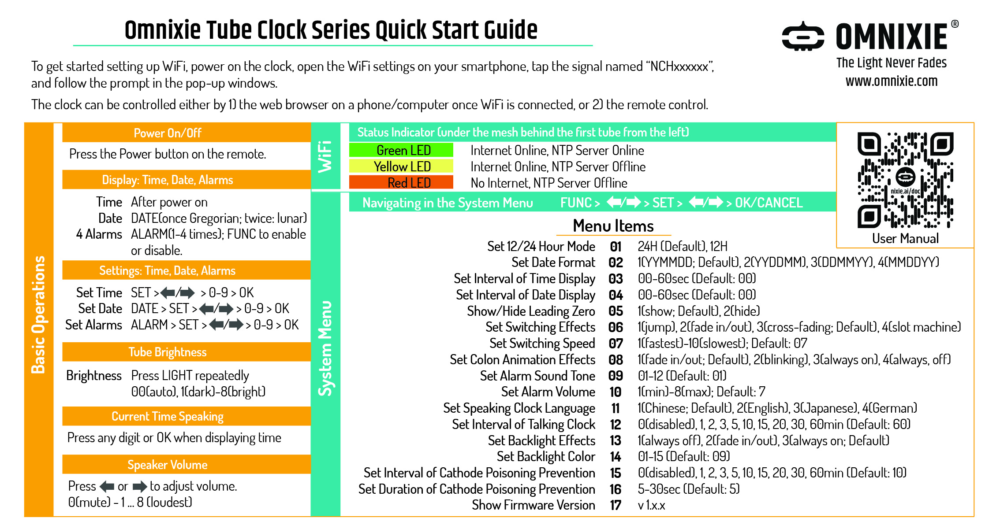
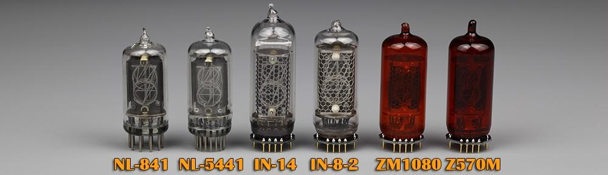
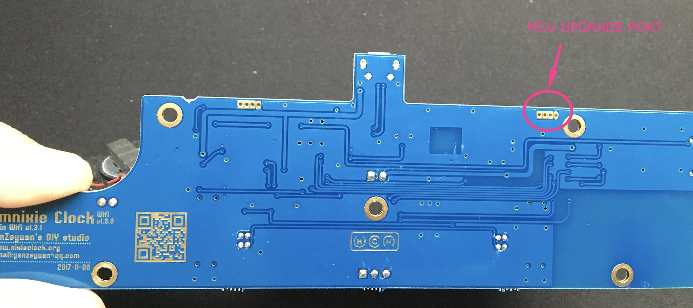
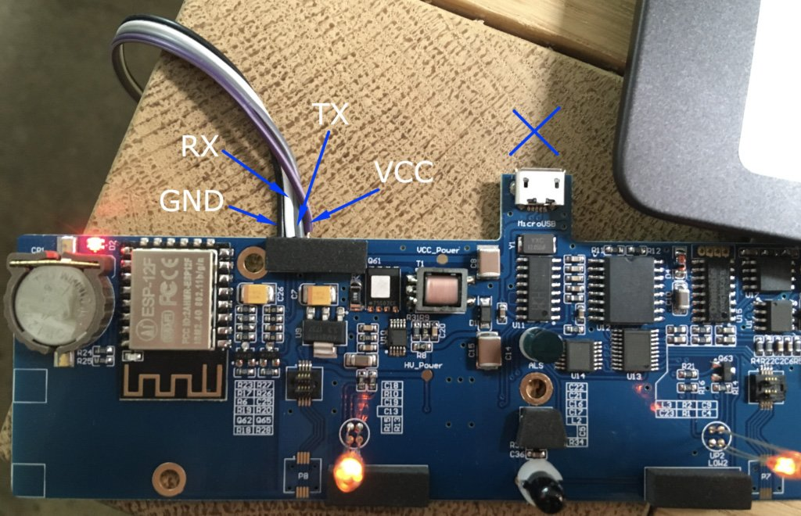
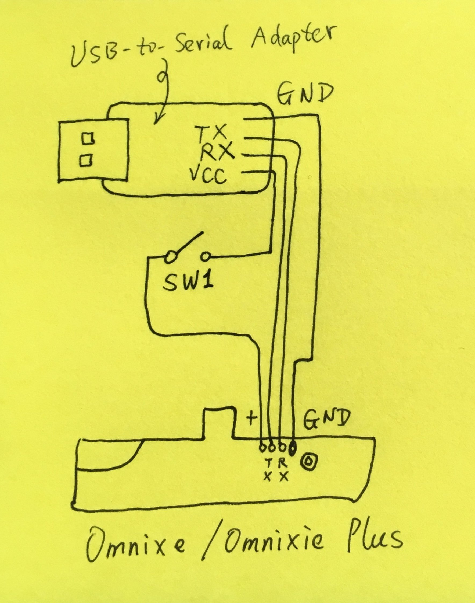
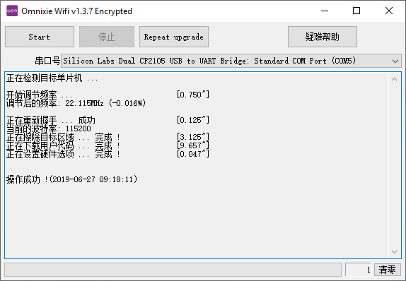

Omnixie Clock
Central documentation page for the Omnixie Tube Clock
Back to Products
Quick Start Guide

Auto-on-off Feature
Once the auto-on-off feature is enabled, the clock will check whether the current time falls between the "sleep" time when the minute changes. If so, it will turn itself off to follow the auto-on-off rule. The auto-on-off feature overrides the manual on/off.
When in doubt, first try to disable the auto-on-off feature before proceeding with any troubleshooting.
How to Reset the Omnixie Clock to its Factory Settings
- Press the power button on the remote to turn off the clock.
- Press 9434, then OK on the remote.
- This will reset the clock to its factory default settings (WiFi settings erased), and turn the clock on.
If you need to reset the clock while preserving the WiFi settings, use code 4648 instead of 9434.
How to Minimize the Humming Noise of Omnixie and Omnixie Plus Clocks
Some of you may have noticed the humming noise of Omnixie/Omnixie Plus nixie clocks, or other nixie clocks with adjustable brightness feature, especially during nighttimes when the clock is located in your bedroom. Although some may think it is barely noticeable, others can get annoyed by the noise, as hearing capability differs among people. This article discusses the principles and provides two solutions to minimize the humming noise.
Our Omnixie and Omnixie Plus clocks allow users to adjust the brightness of the tubes. This is achieved using PWM (Pulse Width Modulation), which is a common way to control dimming of LEDs, or the direction of a servo. During PWM, the digital signal is turned on and off repeatedly at a high frequency (thousands Hz). By manipulating the percentage of the ON time vs OFF time, named "duty cycle", one can achieve analog-equivalent voltages on the tubes, therefore adjust their brightness. The side effect of PWM technique is the humming noise created by the rapidly switching of the voltages.
There are two ways to keep the humming to its minimal level. Both methods apply to all Omnixie and Omnixie Plus models, regardless of their tube types or enclosure materials (obviously).
Setting the tubes' brightness to the maximum will largely minimize the humming noise. Here is how.
- When the clock is on and displaying time, press the Light button on the remote several times until 8 is flashing.
- Press OK button to confirm.
- Now the tubes are at the maximum brightness.
- In case you need to change it back to automatic brightness based on ambient light, repeat the first step until six 0's are shown and press OK to confirm.
Another way to lower the humming noise, is to change the switching effects of the digits to "jumping to the next digits directly without any fading in/out effects". This can be done following the directions below.
- When the clock is on and displaying time, press the Func button on the remote to enter the menu system.
- Press the right arrow (⇒) button multiple times, until the first two digits show 06.
- Press SET button.
- Press left or right arrow until the rightmost digit changes to "1". The digit in the middle will show the actual current effect.
- Press OK to save/confirm.
- Press Cancel to exit the menu and return to the clock display.
After setting up the clocks with these two methods, the humming noise should be minimal.
What types of tubes are supported by Omnixie clocks
6 types of tubes are supported.
- Omnixie Model A: IN-14
IN-14 tubes' soft wires are soldered to IN-14 specific PCB adapters to plug onto Omnixie clock base. - Omnixie Model B: IN-8-2
IN-8-2 tubes' soft wires are soldered to IN-8-2 specific PCB adapters to plug onto Omnixie clock base. - Omnixie Model C: Z570M
Z570M tubes' soft wires are soldered to Z570M specific PCB adapters to plug onto Omnixie clock base. - Omnixie Model D: ZM1080
ZM1080 tubes' soft wires are soldered to ZM1080 specific PCB adapters to plug onto Omnixie clock base. - Omnixie Model E: NL-5441 (with rigid pins)
as well as any tubes with RTS-54 sockets, for example, National NL-5440/5441/5442/5448, NL-5440A/5441A; Burroughs B-5440/5441/5440A/5441A etc. - Omnixie Model F: NL-841 (with rigid pins)
as well as any tubes with RTS-11 sockets (for example, National NL-840/841/842/845/846/848/900/901 etc.)
What's the difference among these tubes?
The Omnixie clock supports 6 different types of Nixie tubes, as shown in the photo below.
Other than their various appearance, they also differ in term of the scarcity, as they were manufactured in 1970s to 1990s. All tubes are so-called "New Old Stock". This consequently leads to their price difference. Simply put, the price is higher if they are more difficult to find these days.
Among them, IN-14 and IN-8-2 are the easiest to find on the market.

Can I buy the Omnixie clock without tubes?
Surely you can.
We know that some of our customers have collection of Nixie tubes, so we offer the Omnixie clock base (with the colon tubes included) so that you can supply your own tubes to make it a complete clock. Other than the 6 tubes, everything else is included in the sale (colon tubes, remote, usb cable and power).
What if I want to change to a different type of tubes after I own the Omnixie clock?
Omnixie models A, B, C and D share the exactly same clock base. In order to use different tubes, you need to buy the corresponding PCB adapter to fit the tubes to the base.
For example, if you own an Omnixie model A (IN-14 tube version), and you want to use IN-8-2 tubes instead, you can simply buy the IN-8-2 PCB adapters from us, and solder your IN-8-2 tubes to the adapters, before they can be plugged onto the clock. Remember to change the tube types after the tubes are changed, using the remote control, or the web interface. Details can be found in the Omnixie instruction manual.
Omnixie model E and F use unique socket types, therefore cannot use any other tube types than the ones they are designed.
How to reset the clock to factory default
- Use the remote to turn the clock off.
- Press 4648 and OK, to restore it to factory default (except the wifi settings), or,
- Press 9434 and OK, to restore all settings to factory default.
- Done.
Update firmware for Omnixie clock series
You can update the firmware yourself if you feel comfortable.
The latest version is v1.3.7 as of July 6th, 2019.
Change List of v1.3.7 (non-critical update)
- 1. Speak 12AM in midnight incorrectly as 12PM. Fixed.
- 2. LEDs will randomly light up when powered on if LEDs are setup to "Always OFF".
- 3. For Menu 4 "Set Interval of Date Display", IR remote can only set 0-9, but it should be 0-60.
The following procedure applies to all Omnixie and Omnixie Plus clock series.
What you'll need for the update:
- a USB-to-Serial adapter (those with CP210x chip are recommended)
- Four pieces of jumper wires.
- 2mm hex allen wrench
Procedures
- Disconnect the power cord from the Omnixie clock.
- Unplug all the tubes from the clock.
- Use a 2mm hex wrench, loose and remove all the screws on the bottom of the Omnixie clock.
- Carefully remove the wood frame.
- On the bottom of the lower PCB board, locate the 4-hole upgrade port, indicated in the image below.
Pin Definition
- Pin 1: GND. the oval-shaped one to the right, closest to the mounting hole.
- Pin 2: RX
- Pin 3: TX
- Pin 4: VCC (5V)



Connect these 4 holes to a USB-to-SERIAL adapter.
Download the Flash Tool (for Microsoft Windows)
Unzip it to get the exe file. Follow the procedures shown in this YouTube link.
- Connect RX from the USB-to-SERIAL adapter to the TX on the clock
- Connect TX from the USB-to-SERIAL adapter to the RX on the clock
- Connect GND from the USB-to-SERIAL adapter to the GND on the clock
- DO NOT connect VCC yet.
- Plug in the USB-to-SERIAL adapter to your Windows computer, and make sure the driver is properly installed.
- Run the Flash Tool.exe
- Select the correct COM port for your adapter.
- Click "Start".
- Now, connect VCC from the USB-to-SERIAL adapter to the VCC on the clock
- In the software, the flashing process should automatically proceed.
- Wait for a few minutes for the process to finish.
- Done.
If everything goes well, this is what you should see this.
The core of the software is provided by STC and only has Chinese UI. Sorry for the inconvenience.
